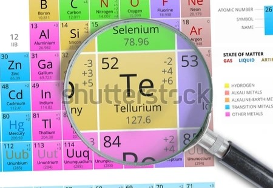
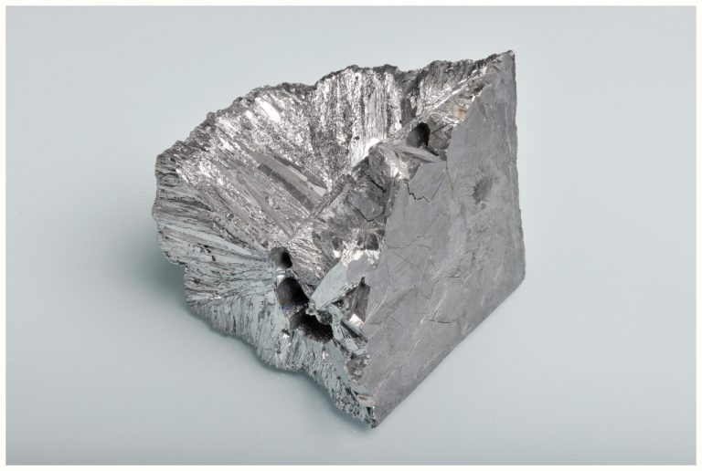

Теллур
Теллу́р (химический символ — Te, от лат. Tellurium) — химический элемент 16-й группы (по устаревшей классификации — главной подгруппы шестой группы, VIA), пятого периода периодической системы химических элементов Д. И. Менделеева, с атомным номером 52.Простое вещество теллур — хрупкий, малотоксичный редкий полуметалл (иногда его также относят к неметаллам) серебристо-белого цвета.
Впервые был найден в 1782 году в золотоносных рудах Трансильвании горным инспектором Францем Йозефом Мюллером (впоследствии барон фон Райхенштейн), на территории Австро-Венгрии. В 1798 году Мартин Генрих Клапрот выделил теллур и определил важнейшие его свойства.

Теллур присутствует в тканях растений (2·10–4–2,5·10–3 %) и животных (около 2·10–6 %). Умеренно токсичен для растений и высокотоксичен для млекопитающих (вызывает задержку роста, потерю шерсти, паралич и т. д.). Теллур и его соединения (в первую очередь летучие, например теллуроводород H2Te) высокотоксичны для человека (всасываются неповреждённой кожей): вызывают озноб, головную боль, слабость, частый пульс, тошноту, раздражение дыхательных путей, потливость, выпадение волос, нарушение нуклеинового и белкового обмена и др.Теллур извлекают попутно при переработке сульфидных руд, из полупродуктов медного, свинцово-цинкового производства, а также из некоторых золотых руд. Основной источник – шламы электролиза меди, содержащие 0,5–2 % Те, а также Ag, Au, Se. Объём мирового производства теллура около 380 т/год (2012).

Теллур используют в полупроводниковой технике, в качестве легирующей добавки в сплавах свинца, чугуне и стали; для вулканизации латексных смесей, производства коричневых и красных стёкол и эмалей.